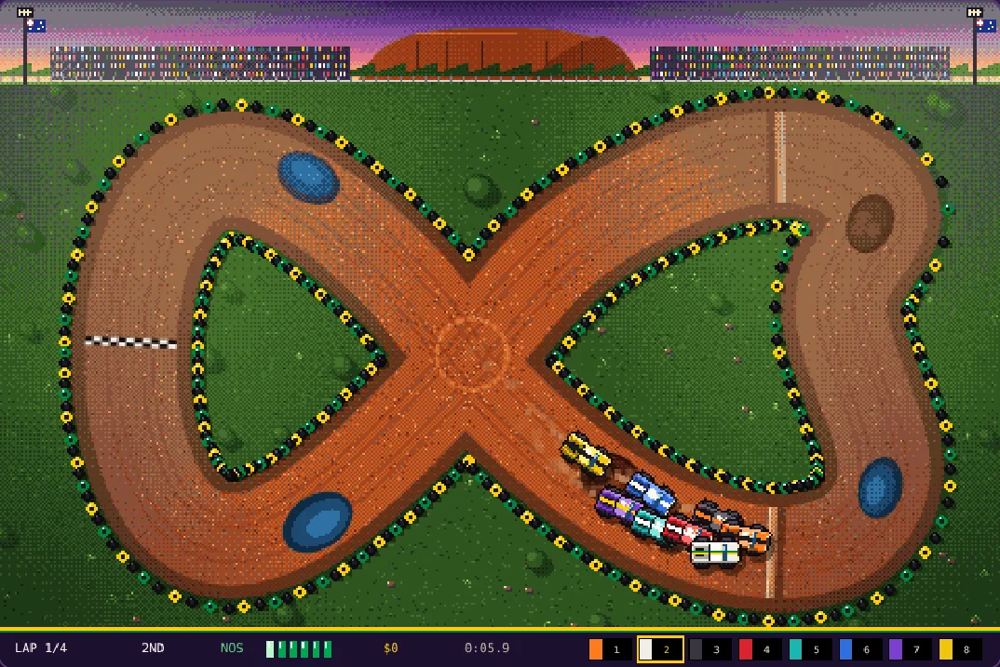
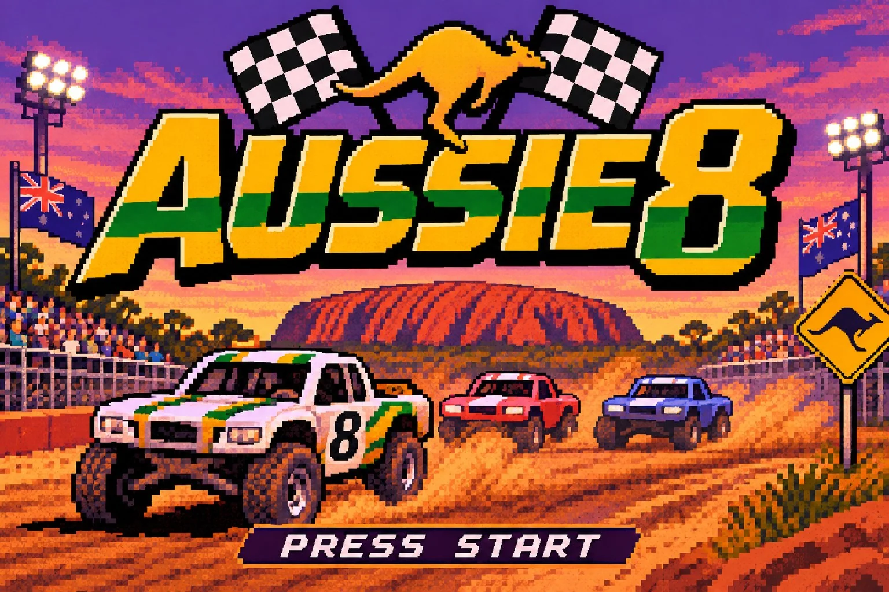
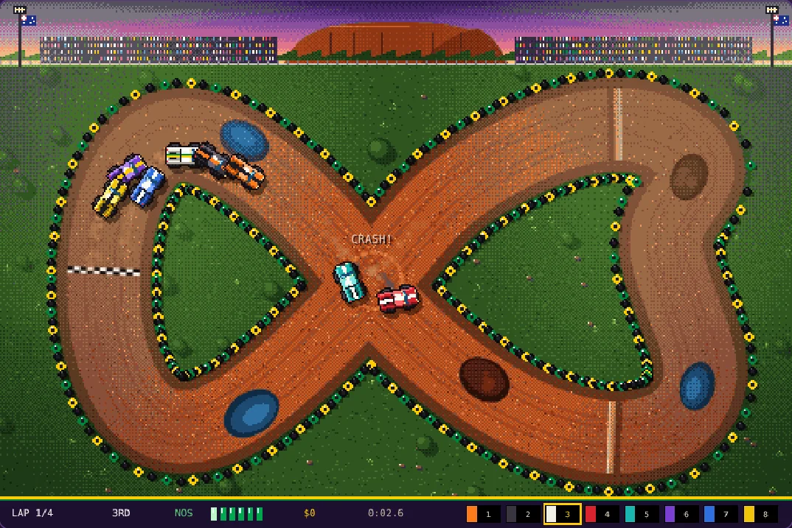
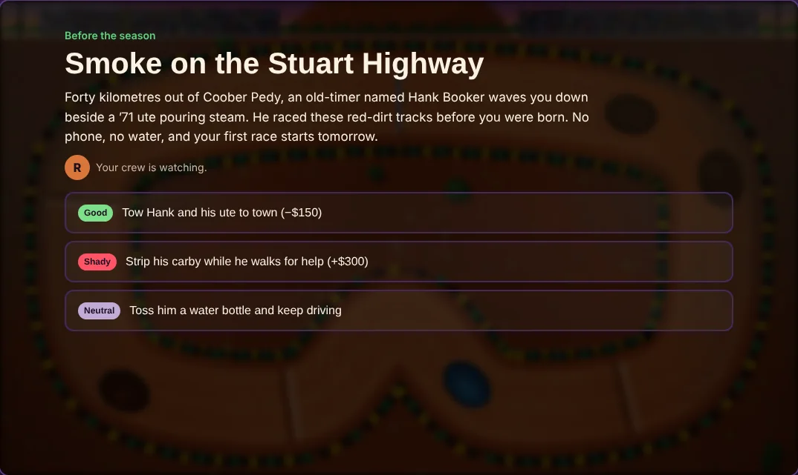
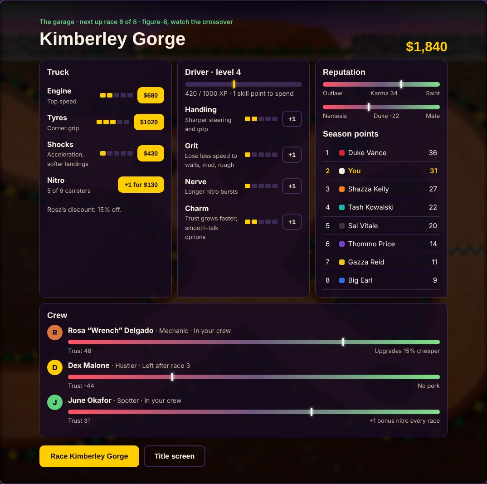
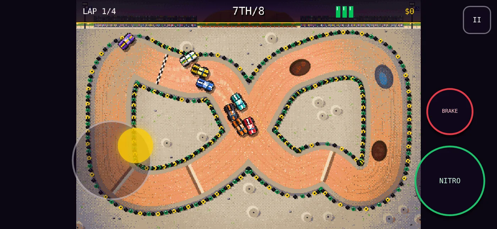

Arcade truck racing
Eight trophy trucks, four laps, mud, water, jump ridges and nitro. Grab cash bags and nitro cans, and watch for kangaroos hopping across the track.


Free in your browser · Keyboard or touch · Saves on your device
Tip: click the game once so it can hear your keyboard. Arrows or WASD to drive, Space for nitro, P to pause.

Eight trophy trucks, four laps, mud, water, jump ridges and nitro. Grab cash bags and nitro cans, and watch for kangaroos hopping across the track.

Half the season runs on figure-8s, where the field meets in the middle. Time it badly and a side-on hit spins you out in a shower of sparks.

Between races, help strangers or rob them, take Duke's bribe or leak it to Channel 8. Karma and your rival remember, and some choices come back races later.

Level up your driver, upgrade the engine, tyres and shocks, and keep Rosa, Dex and June on side. Each one has a perk, and each one will walk if you push them too far.

On phones the race goes fullscreen. Put your thumb down anywhere on the left and point where you want to go: gas is automatic, and NITRO sits right under your right thumb.
Prefer buttons? Switch to big ◀ ▶ with GAS and NITRO side by side, or flip everything for left-handed play. Add Aussie 8 to your home screen and it opens fullscreen like an app.
What changed, newest first.
Loading…